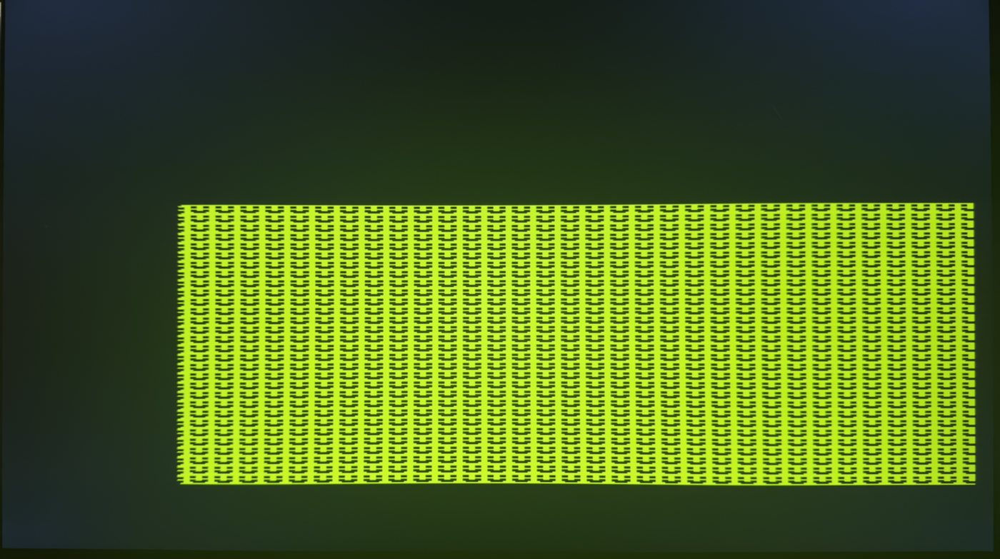
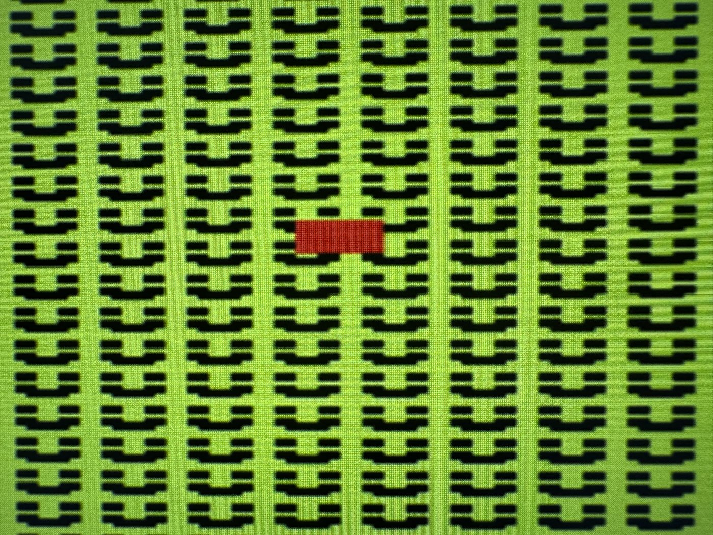

The VG8 is a simplified 8-bit game console built from scratch in Verilog HDL on a contemporary FPGA (iCEBreaker v1.0e board), designed as a platform for directly comparing the hardware of 1980s personal computers and game consoles. The subsystems required to constitute an 8-bit game console are implemented in hardware: an 8-bit CPU with ALU, a memory subsystem with RAM, VRAM, and ROM blocks, a Picture Processing Unit with tile-based rendering and hardware sprites, an Audio Processing Unit with multiple sound channels, and a unified memory-mapped I/O subsystem. All subsystems were tested and confirmed functional.
With the working prototype alongside original hardware manuals and technical references, the thesis analyses the design trade-offs between game consoles and personal computers in the 1980s. At the time, the technology was not yet capable of a single general-purpose machine that could do everything well, the way a modern PC handles both work and gaming, so the two families diverged into specialised designs. Game consoles favoured deterministic, real-time performance through dedicated hardware subsystems; personal computers favoured general-purpose architectures that bought expandability at the cost of greater latency. The paper is both a documented hardware comparison for historical preservation and a baseline platform for future architectural studies.
// 8-bit ALU for the VG8 CPU module ALU(A, B, carry, alu_opc, Y, Z_out, C_out); parameter N = 8; // default width = 8 bits input [N-1:0] A; // operand A input [N-1:0] B; // operand B input carry; // carry in input [4:0] alu_opc; // 5-bit ALU operation output reg [N-1:0] Y; // result output reg Z_out, C_out; // zero / carry flags always @(*) begin Z_out = 0; C_out = 0; case (alu_opc) `OP_ZERO: Y = 0; // unary `OP_LOAD_A: Y = A; `OP_LOAD_B: Y = B; `OP_INC: Y = A + 1; `OP_DEC: Y = A - 1; `OP_ADD: {C_out, Y} = A + B; // binary `OP_SUB: {C_out, Y} = A - B; `OP_ADC: {C_out, Y} = A + B + (carry ? 1 : 0); `OP_AND: Y = A & B; // logical `OP_OR: Y = A | B; `OP_XOR: Y = A ^ B; `OP_NOT: Y = ~A; `OP_SHL: {C_out, Y} = {A, 1'b0}; // shift left, carry out `OP_SHR: {Y, C_out} = {1'b0, A[N-1:1]}; // shift right, carry out `OP_ROL: {C_out, Y} = {A, carry}; // rotate through carry `OP_ROR: {Y, C_out} = {carry, A[N-1:1]}; default: Y = 0; endcase if (Y == 8'b0) Z_out = 1; // set zero flag end endmodule . . . // CPU.v continues: opcode table, register file, // control-unit FSM, and the memory interface.
The VG8’s arithmetic logic unit within the CPU; each operation is dispatched from a single combinational case block, hand-coded in Verilog. (This is one module of a much longer file.)

